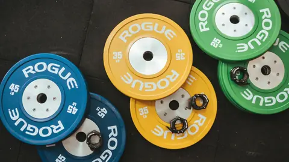
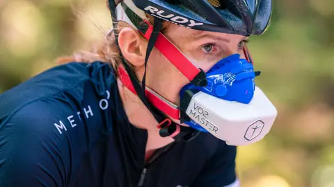
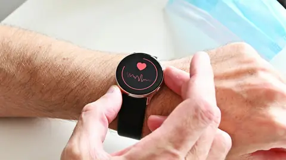

1RM
Una repetición máxima: el peso más alto que puedes levantar una sola vez en un ejercicio. Sirve de referencia para expresar la carga en porcentaje. Cuántas repeticiones haces a cada porcentaje cambia según el ejercicio y de una persona a otra.
Los conceptos que salen en Lactac, explicados en pocas líneas y con su fuente. En toda la web, las palabras con subrayado de puntos lima te traen aquí. Si echas algo en falta, cuéntamelo.
Una repetición máxima: el peso más alto que puedes levantar una sola vez en un ejercicio. Sirve de referencia para expresar la carga en porcentaje. Cuántas repeticiones haces a cada porcentaje cambia según el ejercicio y de una persona a otra.
Siglas del Colegio Americano de Medicina del Deporte (American College of Sports Medicine), una asociación científica que publica posicionamientos con recomendaciones de entrenamiento. Su posicionamiento sobre entrenamiento de fuerza de 2009 se actualizó en 2026.
Dolor muscular que aparece horas después de un esfuerzo al que no estás acostumbrado, sobre todo con contracciones excéntricas (cuando el músculo se alarga mientras hace fuerza). Su mecanismo no está claro: lo más probable es que intervengan varias causas a la vez.
Contracción en la que el músculo hace fuerza mientras se alarga, como al bajar el peso de forma controlada en una sentadilla o un curl. Así el músculo puede hacer más fuerza que al acortarse y gasta mucha menos energía. Si no estás acostumbrado, es la que más daño muscular y agujetas provoca.
La frecuencia cardíaca más alta que alcanzas en un esfuerzo máximo. Baja con la edad y se puede estimar con fórmulas, aunque con un error de unos 11 latidos por minuto, así que lo más fiable es medirla en una prueba de esfuerzo. Se usa, por ejemplo, para calcular las zonas de entrenamiento.
La diferencia entre tu frecuencia cardíaca máxima y tu frecuencia cardíaca en reposo. Calcular la intensidad como un porcentaje de la reserva, sumándole luego el pulso en reposo, tiene en cuenta cómo está tu pulso en reposo.
La forma en que el músculo guarda los hidratos de carbono. Cuánto se gasta durante el ejercicio depende de la intensidad, la duración, el nivel de entrenamiento y lo que haya disponible. Además de combustible, regula señales que intervienen en la adaptación al entrenamiento de resistencia.
Aumento del tamaño del músculo. En él pueden intervenir la tensión mecánica, el daño muscular y el estrés metabólico.
Molécula que el cuerpo produce de forma continua, también cuando hay oxígeno disponible. No es un desecho: es una fuente de energía importante, sirve para fabricar glucosa y actúa como señal entre células.
Vías que reponen el ATP, la molécula que da energía a la contracción, porque el músculo solo guarda una pequeña cantidad. Los fosfágenos (fosfocreatina) y la vía glucolítica (glucógeno) lo reponen sin necesitar oxígeno; la vía oxidativa usa hidratos y grasas con oxígeno. Cuánto aporta cada una depende sobre todo de la intensidad y la duración del esfuerzo.

Aumentar poco a poco la exigencia del entrenamiento para seguir progresando. En fuerza, el ACSM recomienda subir el peso entre un 2 y un 10 % cuando te sobran una o dos repeticiones de las que buscas.
Síndrome de mala adaptación prolongada por un desequilibrio entre entrenamiento y recuperación. No es lo mismo que una bajada de rendimiento corta que, tras recuperar, acaba en mejora. Ningún marcador por sí solo permite diagnosticarlo: se llega descartando otras causas.
Intensidad a la que cambia el comportamiento del lactato en sangre durante una prueba de esfuerzo progresiva. Se suelen distinguir dos: cuando el lactato empieza a subir por encima del reposo, y la intensidad más alta a la que su producción y su eliminación siguen en equilibrio. Hay al menos 25 formas distintas de calcularlo.

La cantidad máxima de oxígeno que puedes consumir durante el ejercicio. La limita sobre todo la capacidad del corazón y la circulación para llevar oxígeno al músculo. Marca el techo del rendimiento de resistencia, pero no lo explica todo: también cuentan la economía de movimiento y qué parte de tu VO2 máx eres capaz de mantener.

Rangos de intensidad que se usan para planificar el entrenamiento. Una forma habitual de delimitarlas es con los dos umbrales de lactato: por debajo del primero, entre los dos y por encima del segundo.
También se usan porcentajes fijos de la frecuencia cardíaca máxima, más fáciles de calcular pero menos precisos, porque los umbrales caen a porcentajes distintos en cada persona.
Si echas en falta un término, algo no se entiende o tienes una duda, cuéntamelo. Las dudas se responden de forma general.